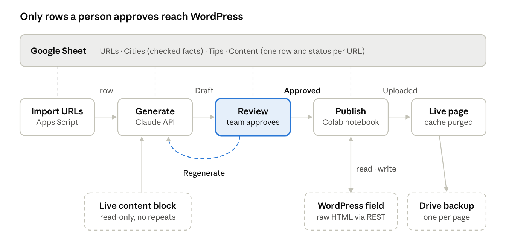

Scaling Local SEO Content for City Landing Pages
We added a short, verified, city-specific section to around 330 local landing pages with one Google Sheet, an LLM, a human approval step and the WordPress REST API, without touching the human-written copy. This post walks through the full workflow, including the code, the prompt iterations that failed, and the safety rails that make a bulk write to a live site boring instead of scary.
Tools used
- Google Sheets and Apps Script
- Claude API
- Google Colab
- WordPress REST API with ACF
- German Wikipedia API

Why we built it
The site is a German home-services marketplace with city landing pages in several variants: a main service page per city, two synonym variants, add-on service pages (oven cleaning, ironing, window cleaning and so on) and English pages for expats. Most of the copy was well written by humans, but apart from the city name, the pages for Hamburg and Backnang read almost the same.
That is a known weak spot for local SEO: near-identical templates give search engines and AI answer engines little reason to treat each city page as its own answer. We wanted each page to carry something that is true for that city only, without rewriting copy that already worked.
The constraints we set:
- Keep the existing text exactly as it is. Add a section, never rewrite one.
- Use only facts we can verify. No invented numbers, prices or availability.
- Sibling pages for the same city must not read like duplicates of each other.
- Every page passes a human before it goes live.
- The upload must be reversible, page by page.
The workflow at a glance
Five stages share one Google Sheet: import, generate, review, publish, go live. The review step is the only path to WordPress, and a reviewer can send any row back for regeneration.

Each stage reads and writes its own row in the sheet, so the Status column always shows where every page is. Generation reads the live page only to avoid repeating it; publishing reads and writes the raw WordPress field and keeps a backup of every page it touches.
Deciding what makes a page genuinely local
The final section uses districts, a rotated practical tip and, for big cities only, one local place. We got there by dropping two ideas that looked better on paper.
We first drafted five variations for one city and asked the team to pick: districts, housing type (old buildings, wooden floors), weather, daily life, and neighbourhood trust. The team chose districts, weather and a touch of daily life. Then the research started, and reality trimmed the list.
| Local fact | What we tried | Why we kept or dropped it |
|---|---|---|
| Districts | 4 real districts per city, linked to searching by postcode | Kept. Easy to verify, useful for the reader, unique per city. |
| Water hardness | One value per city from the local water supplier | Dropped. Suppliers publish values per zone in PDFs; 89 of 161 cities ended up low-confidence or missing. Too slow to verify at scale. |
| Weather / climate | Rainy north, dry south | Dropped. Neighbouring cities get the same sentence, so it does not differentiate. |
| Local places | 2 places where locals spend free time | Kept for the 14 cities over 500,000 inhabitants only. For small towns the research returned tourist sights or places outside the city. |
| Practical tip | After a party, before visitors, moving out, pet hair | Added. Not city-specific, so it is rotated: pages of the same city never share a tip. |
The lesson: pick local facts by how cheaply you can verify them, not by how impressive they sound. A wrong water-hardness number on 300 pages is worse than no number. The section ended up as a heading plus 2 to 3 bullets:
- Stadtteile (districts): required, the city-specific part.
- Praxistipp (practical tip): required, rotated from a pool per page type.
- Alltag (daily life): only where a verified local place exists.
Building and verifying the fact base
All facts live in one Google Sheet, and every district was checked automatically against German Wikipedia before anyone proofread it. 157 of 161 cities passed; the 4 flagged ones each had one name to fix or confirm.
The sheet has four tabs:
| Tab | One row per | Key columns |
|---|---|---|
| URLs | landing page | URL (the input list, never modified) |
| Cities | city | City, URL slugs, Districts, Local places, Source, Confidence, Notes, Checked |
| Tips | practical tip | Tip group, Tip ID, Occasion, Angle for the AI, Active |
| Content | landing page | URL, Intent, City slug, Language, Heading, Existing content block, New section text, Status, Notes, Updated, Tip ID, Post ID |
Two details matter here. URL slugs is a comma-separated list, because one city appears under several slugs (koeln and cologne, frankfurt and frankfurt-main). Checked is a checkbox the team ticks after reviewing a city; the generator can be told to skip every unticked city.
The first research pass was done by LLM agents with web search, and it was the weakest part of the project: plausible-looking districts with no source. So we added a deterministic check. For each city, the script loads the German Wikipedia article (plus any "Liste der Stadtteile" page) and looks for each district name. Names not found get a second chance through Wikipedia search.
import json, subprocess, sys, time, urllib.parse
API = "https://de.wikipedia.org/w/api.php?"
UA = "CityContentCheck/1.0 (internal content QA)"
def api(**p):
# curl instead of urllib: Python on macOS often lacks the SSL certificate bundle
p.update(format="json", formatversion="2")
for i in range(4):
try:
out = subprocess.run(["curl", "-s", "--max-time", "30", "-A", UA,
API + urllib.parse.urlencode(p)],
capture_output=True, text=True, timeout=40).stdout
return json.loads(out)
except Exception:
time.sleep(2 + i * 3)
return {}
def wikitext(title):
d = api(action="query", titles=title, prop="revisions", rvprop="content",
rvslots="main", redirects=1)
pages = d.get("query", {}).get("pages", [])
if not pages or pages[0].get("missing"):
return ""
return pages[0]["revisions"][0]["slots"]["main"]["content"]
def found_by_search(name, city):
d = api(action="query", list="search", srsearch=f'"{name}" {city}', srlimit=3)
return any(name.lower() in h["title"].lower() for h in d.get("query", {}).get("search", []))
def check_city(city, names):
text = wikitext(city) + wikitext(f"Liste der Stadtteile von {city}")
missing = [n for n in names if n not in text and not found_by_search(n, city)]
confidence = "high" if not missing else ("medium" if len(missing) == 1 else "low")
return confidence, missing
print(check_city("Hannover", ["List", "Linden", "Kirchrode", "Döhren"]))Run it sequentially. Our first parallel run flagged 23 cities as low-confidence, including obviously real districts. Wikipedia had throttled the requests, so the articles came back empty. Re-checking those 23 one at a time cleared 19 of them. A "not confirmed" result is a prompt to look, not proof the name is wrong.
Generating the sections with Apps Script and the Claude API
Generation runs inside the sheet as a bound Apps Script with a custom menu, so the people who proofread never leave the spreadsheet. It calls the Claude API (we used Claude Opus 5.5 at high effort) over plain HTTP, because Apps Script has no SDK.
The menu has four entries: Import URLs, Generate sections, Start auto-run (a time trigger that continues every 10 minutes, since Apps Script stops a run after 6 minutes) and Regenerate selected rows. The API key is stored in Script Properties, never in a cell.
1. The URL folder decides the intent
Each URL folder maps to a topic for the prompt and a label for the heading. A /de_en/ prefix switches the language to English.
const INTENTS = {
'putzfrau': { label: 'Putzfrau', topic: 'eine Putzfrau für den Privathaushalt finden und buchen' },
'reinigungskraft': { label: 'Reinigungskraft', topic: 'eine private Reinigungskraft finden' },
'backofen-reinigen': { label: 'Backofenreinigung', topic: 'Backofenreinigung als Zusatzleistung' },
'cleaner': { label: 'Cleaner', topic: 'finding and booking a home cleaner (expats)' },
// …one entry per URL folder on your site
};
function parseUrl_(url) {
const parts = url.replace(/^https?:\/\/[^/]+\//, '').split('/').filter(Boolean);
let lang = 'de';
if (parts[0] === 'de_en') { lang = 'en'; parts.shift(); }
return { intent: parts[0] || '', slug: parts[1] || '', lang: lang };
}URLs whose slug is not in the Cities tab (district pages, generic pages) are marked Excluded at import.
2. Read the existing content block, only to avoid repeating it
The model gets the page's editorial block so it never repeats prices, booking steps or districts that are already there. On our template that block sits between the testimonials heading and either the FAQ accordion or the city-link footer. Adjust the two regexes to your own template.
function fetchContentBlock_(url) {
const html = UrlFetchApp.fetch(url, { muteHttpExceptions: true }).getContentText();
const re = /<h2[^>]*>([\s\S]*?)<\/h2>/gi, heads = [];
let m;
while ((m = re.exec(html)) !== null) heads.push({ text: cleanText_(m[1]), start: m.index });
const t = heads.findIndex(h => /Erfahrungsberichte|testimonials/i.test(h.text));
const f = heads.findIndex((h, i) => i > t && /^FAQs?$|in diesen Städten|in the following cities/i.test(h.text));
if (t < 0 || f < 0 || f <= t + 1) return '';
return cleanBlock_(html.substring(heads[t + 1].start, heads[f].start)); // tags → "## ", "• " text
}Our first version sent the whole page, cut at 15,000 characters. Provider profile cards filled the limit, so the model never saw the actual copy. Scope the input to the block you care about.
3. Rotate tips so sibling pages differ
Tips come from the Tips tab, filtered to the page type. A hash of the URL picks the starting tip, and tips already used on another page of the same city are skipped.
function pickTip_(row, r, data, tips) {
const general = ['putzfrau', 'haushaltshilfe', 'reinigungskraft', 'cities', 'cleaner'];
const pool = tips[general.includes(row.intent) ? 'general' : row.intent] || tips['general'] || [];
if (!pool.length) return null;
const used = new Set(data.filter((d, i) => i + 2 !== r && d.slug === row.slug).map(d => d.tipId));
let h = 0;
String(row.url).split('').forEach(c => { h = (h * 31 + c.charCodeAt(0)) >>> 0; });
for (let k = 0; k < pool.length; k++) {
const tip = pool[(h + k) % pool.length];
if (!used.has(tip.id)) return tip;
}
return pool[h % pool.length];
}4. Call the model
fallbacks: 'default' lets the API retry on another model if a request is declined. The response contains thinking blocks, so only the text blocks are kept.
function callClaude_(apiKey, prompt) {
const res = UrlFetchApp.fetch('https://api.anthropic.com/v1/messages', {
method: 'post', contentType: 'application/json', muteHttpExceptions: true,
headers: {
'x-api-key': apiKey,
'anthropic-version': '2023-06-01',
'anthropic-beta': 'server-side-fallback-2026-07-01',
},
payload: JSON.stringify({
model: 'claude-opus-5-5',
max_tokens: 8000, // includes thinking tokens
output_config: { effort: 'high' },
fallbacks: 'default',
system: prompt.system,
messages: [{ role: 'user', content: prompt.user }],
}),
});
const body = JSON.parse(res.getContentText());
if (res.getResponseCode() !== 200) throw new Error('API ' + res.getResponseCode() + ': ' + body.error?.message);
if (body.stop_reason === 'refusal') throw new Error('Request refused by the model');
if (body.stop_reason === 'max_tokens') throw new Error('max_tokens reached');
return body.content.filter(b => b.type === 'text').map(b => b.text).join('').trim();
}The heading is built in code, not by the model: [Service] in [City]: Gut zu wissen ("good to know"). A fixed pattern keeps headings consistent and avoids clashing with headings the template already uses.
Prompt design: what the pilot taught us
It took five prompt versions on five pilot pages before the team signed off. Each version fixed one concrete problem the reviewers pointed at, and the biggest change was structural, not stylistic.
| Version | What it produced | Reviewer feedback | Change |
|---|---|---|---|
| 1 | 110–130 word paragraph appended to an existing section | Twice as long as the section; buries a scannable step-by-step guide | Cap at 50 words |
| 2 | Short paragraph inside the existing section | Still breaks a structure that works well for readers and LLMs | Separate section with its own heading |
| 3 | Intro sentence + bullets | Intro generic ("a few local details help"); facts with no use to the reader | Ban generic intros; every bullet needs a benefit or a next step |
| 4 | Bullets with a call to action | Good, but the intro repeated the bullets | No intro at all |
| 5 | Heading + 2–3 bullets | Approved | Final |
Three rules made the biggest difference:
- Every sentence must give the reader something: a concrete benefit, a local fact with its consequence, or a helpful next step. "After a party you should clean thoroughly" fails; "Birthday party left its mark on the kitchen? Book your cleaner for the day after" passes.
- One good and one bad example, with an explicit instruction not to reuse their wording. Without the warning, 300 pages start the same way.
- Never mention sources or uncertainty in the copy. An early draft printed "according to third-party sources" straight into the text, because that phrase was in the fact sheet.
The final system prompt, in German because the content is German (an English version with the same rules handles the /de_en/ pages):
Du bist erfahrene SEO-Texterin für [Marke], eine Plattform zur Vermittlung selbstständiger
Reinigungskräfte an Privathaushalte.
Aufgabe: Schreibe den Inhalt eines NEUEN, eigenständigen Abschnitts für eine bestehende
Stadt-Landingpage. Die Überschrift ist vorgegeben. Die bestehenden Abschnitte bleiben
unverändert – du bekommst sie nur, damit du nichts wiederholst.
Qualitätsmaßstab: Jeder Satz muss dem Leser etwas bringen – einen konkreten Nutzen, einen
lokalen Fakt mit Konsequenz oder einen hilfreichen nächsten Schritt.
Format (ohne Markdown):
KEINE Einleitung: Der Abschnitt beginnt direkt mit dem ersten Aufzählungspunkt.
2–3 Aufzählungspunkte, jeweils mit „• “ und einem Label mit Doppelpunkt:
• Stadtteile: (Pflicht) Stadtteile + konkreter Vorteil (z. B. feste Termine leichter planbar).
Nennt der bestehende Inhaltsblock schon Stadtteile, verwende andere aus der Liste.
• Praxistipp: (Pflicht) Greife den vorgegebenen Anlass auf, als kurze Frage plus Lösung
mit Bezug zur Reinigungskraft. Keine stadtspezifischen Behauptungen.
• Alltag: (nur wenn Orte angegeben sind) kurze Frage mit einem der Orte als Wunsch-Freizeit,
dann der Nutzen: Die Reinigungskraft übernimmt den Haushalt.
Gutes Beispiel (nur für Stil – Formulierungen nicht übernehmen): …
Schlechte Beispiele (so NICHT): …
Regeln:
- Jeder Punkt max. 35 Wörter, insgesamt max. 90 Wörter. Formelle Anrede „Sie“.
- AUSSCHLIESSLICH die gelieferten Fakten. Keine Zahlen, Preise, Verfügbarkeiten, Garantien.
- Niemals Quellen oder Unsicherheiten im Text nennen.
- Nichts wiederholen, was bereits im Inhaltsblock der Seite steht.
- Bei Zusatzleistungen (Backofen, Polster …) Punkte und Tipp auf die Leistung beziehen.
- Satzanfänge gegenüber bereits existierenden Abschnitten dieser Stadt variieren.
- Nur den Abschnittsinhalt ausgeben, ohne Überschrift oder Kommentar.The user message carries the URL, the page topic, the heading, the existing content block, the city facts, the assigned tip, and any sections already generated for the same city. That last part is what keeps the Putzfrau and Reinigungskraft pages of one city from reading alike.
Human review: the approval gate
Nothing reaches WordPress unless a person has set its row to Approved. The Status column is a dropdown, and each value is owned by either the script or a human, so everyone can see where every page is.
| Status | Set by | Meaning |
|---|---|---|
| Draft | Apps Script | Generated, waiting for review |
| Regenerate | Reviewer | Generate this row again on the next run |
| Approved | Reviewer | Ready to publish |
| Uploaded | Publisher | Written to WordPress |
| Error | Publisher | Upload failed; reason in Notes |
| Excluded | Apps Script | District or non-city page |
There are two review gates. The fact gate is in the Cities tab: a reviewer ticks Checked after confirming the districts, using the Wikipedia link in the Source column. With REQUIRE_CHECKED_FACTS = true, the generator skips every unticked city. The copy gate is in the Content tab: a reviewer reads the section, fixes small things directly in the cell, and approves. The publisher uploads exactly what is in the cell, so manual edits are respected.
The Tips tab has an Active checkbox per tip, so editors can retire a tip or add a seasonal one without touching code.
Publishing to WordPress from Google Colab
Approved rows are written into the page's own content field through the WordPress REST API, from a Colab notebook that reads and updates the same sheet. Read the raw stored value through the API; never scrape the rendered page and write that back.
Why Colab: it can read the sheet directly, write the status back, keep the bot password in Colab Secrets, and store backups in Google Drive. Anyone on the team with sheet access can run it.
Step 1: Find where your content is stored
On page builders like Elementor, the editable text is often not in the normal post content. In our case content.raw was empty and the text lived in an ACF field displayed by a template. To find yours:
- Look at the editor. Open one landing page in wp-admin and scroll below the main editor. A box like "SEO Content" with a WYSIWYG field is a strong hint.
- Get the field name, not the label. Go to Custom Fields → Field Groups, open that group, and read the Name column (for example seo_text). The label is for editors; the API uses the name.
- Enable REST access. In the same field group, open Settings → Group Settings and switch on Show in REST API. Without it the API returns "acf": [] even for an admin.
- Confirm with a read-only request. Search the response for a phrase you know is on the page:
r = WP.get(f"{WP_BASE_URL}/wp-json/wp/v2/{POST_TYPE}/{POST_ID}", params={"context": "edit"})
page = r.json()
print(sorted(page.get("acf", {}).keys())) # e.g. ['seo_text', …]
print("How do I find" in json.dumps(page)) # True once the field is exposedThe post type is the slug WordPress uses in the API (/wp-json/wp/v2/<post-type>); custom post types show up in /wp-json/wp/v2/types.
Step 2: A bot user with an application password
Create a dedicated user with the Editor role (or a custom role with edit rights on that post type) and generate an application password under Users → Profile. Store it in Colab Secrets, never in the notebook:
from google.colab import userdata
import requests
WP = requests.Session()
WP.auth = (userdata.get("WP_USER"), userdata.get("WP_APP_PASSWORD"))Step 3: Insert safely
The insertion code is where most of our surprises came from. Your stored HTML will look different from the rendered page:
- Headings contained <b> tags inside <h2>, so a plain-text regex for the closing heading never matched.
- The whole field was wrapped in layout <div> containers; appending after the last </div> would put the section outside the layout.
- Some fields ended with empty paragraphs; appending after them left a large gap above the new section.
- Existing subheadings were <h3><b>…</b></h3>; our first upload used a plain <h2> and looked wrong.
import re, html
START, END = "<!-- city-section:start -->", "<!-- city-section:end -->"
# Your template's closing heading, if it has one; otherwise the section goes at the end
CLOSING_RE = re.compile(r"finden\s*[–-]\s*schnell,?\s*einfach und sicher", re.I)
def section_html(heading, text):
items = []
for line in filter(None, (l.strip() for l in text.splitlines())):
m = re.match(r"^[•\-*]\s*([^:]{2,40}):\s*(.+)$", line)
if m:
items.append(f"<li><strong>{html.escape(m[1])}:</strong> {html.escape(m[2])}</li>")
return f"{START}<h3><b>{html.escape(heading)}</b></h3><ul>{''.join(items)}</ul>{END}"
def strip_block(value):
s, e = value.index(START), value.index(END) + len(END)
return value[:s] + value[e:]
def plain(s):
return re.sub(r"\s+", " ", html.unescape(re.sub(r"<[^>]+>", "", s))).strip()
def insert_block(original, block):
prefix = ""
if START in original: # re-upload: remove the old block first
original, prefix = strip_block(original), "replaced old block, "
for h in re.finditer(r"<h2\b[^>]*>(.*?)</h2>", original, re.I | re.S):
if CLOSING_RE.search(plain(h.group(1))): # ignores <b>/<span> inside headings
return original[:h.start()] + block + original[h.start():], prefix + "before closing H2"
# otherwise: before trailing empty paragraphs/whitespace, inside closing </div>s
tail = re.search(r"(?:\s| | |<br\s*/?>|<p[^>]*>(?:\s| | |<br\s*/?>)*</p>|</div>)*$", original)
cut = tail.start() if tail else len(original)
return original[:cut] + block + original[cut:], prefix + "at end"The HTML comment markers do two jobs: a re-upload replaces the section instead of adding a second one, and the safety check can prove nothing else changed.
Step 4: The publish loop
for row in approved_rows:
post_id = row["post_id"] or find_post_id(row["url"]) # body class "postid-123", or a URL map
original = read_field(post_id) # raw value, context=edit
save_backup(post_id, original) # JSON file in Google Drive
block = section_html(row["heading"], row["text"])
new_value, mode = insert_block(original, block)
expected = strip_block(original) if START in original else original
if strip_block(new_value).strip() != expected.strip():
raise RuntimeError("safety check failed: something besides the section would change")
if not DRY_RUN:
WP.post(f"{WP_BASE_URL}/wp-json/wp/v2/{POST_TYPE}/{post_id}",
json={"acf": {FIELD_NAME: new_value}})
assert block in read_field(post_id) # read back to confirm
write_status(row, "Uploaded" if not DRY_RUN else "Approved", mode)DRY_RUN = True is the default: it reads, backs up, simulates and writes the planned placement into the Notes column. We ran the first real write with a single URL, checked the live page, fixed the formatting, and re-uploaded the same page before touching the rest. A restore cell writes any backup file back to its field.
If the site uses page caching, purge the cache after each batch; otherwise the live page keeps showing the old version and looks like the upload failed.
Pitfalls and lessons learned
Most of our time went into problems no one would have predicted from the plan. These are the ones worth checking on your own site first.
| Pitfall | What happened | Fix |
|---|---|---|
| LLM research without sources | Plausible districts and "places locals love" that were tourist sights or outside the city | Deterministic Wikipedia check; local places only for big cities |
| Over-ambitious local facts | Water hardness per city needed per-zone PDFs from 160 suppliers | Dropped it; replaced with rotated, non-local practical tips |
| Scraped context cut off | The model saw provider profile cards instead of the page copy | Extract only the editorial block between two known headings |
| Rate limiting | Parallel Wikipedia checks returned empty articles, flagging real districts | Run sequentially; re-check flagged items |
| Scraped HTML is not stored HTML | Rendered output differs from the raw field (links, wrappers, shortcodes) | Read and write the raw field with context=edit |
| Field hidden from the API | "acf": [] for an admin user | Enable "Show in REST API" on the field group |
| Formatting inside headings | <h2><b>…</b></h2> defeated a plain-text match | Strip tags before matching heading text |
| Gap above the section | Appended after trailing paragraphs | Insert before trailing filler and inside layout wrappers |
| Heading style mismatch | Plain <h2> rendered differently from existing subheadings | Copy the template's markup (<h3><b>…</b></h3>) |
| Existing copy errors | A Berlin page listed Hamburg districts (copy-paste) | Have the pipeline flag districts from the wrong city |
| Page cache | Live page showed the old version after a successful write | Purge the cache after each batch |
Two working habits paid off. Pilot on five pages of different types (main city page, a synonym variant, an add-on service, an English page, a small town) before scaling, because each type broke something different. And keep humans on decisions, not on mechanics: reviewers judged copy and facts, while the scripts handled lookups, backups and placement.
Results so far and how we will measure impact
The pilot pages are live and the full rollout of about 330 pages runs in reviewed batches. It is too early for ranking data, so this section describes the measurement plan rather than results.
A live example from an English page:
Cleaner in Cologne: Good to know
- Districts: From Ehrenfeld and Nippes to Lindenthal and Sülz, searching by postcode brings up cleaners active in your neighbourhood – handy if you want the same person returning on a regular rhythm.
- Practical tip: Hosting Christmas dinner? Book one visit before the feast and another in the days after, so kitchen and living room shine for guests and the cleanup doesn't eat into your holidays.
- Daily life: Fancy a stroll along the Rheinauhafen instead of scrubbing the bathroom on Saturday? Let your cleaner handle the housework, so more of your weekend belongs to the riverside.
What we will track, per URL, 6 to 8 weeks before and after the upload date:
- Search Console impressions, clicks and average position for [service] [city] and [service] [district] queries.
- New district-level queries the page starts ranking for, since districts are the new local signal.
- Mentions and citations in AI answer engines for city-level prompts.
- A control group: comparable city pages published later in the rollout, to separate the effect from seasonality.
Adapting this to your site
The pattern carries over to any site with templated location pages. The parts you will need to change:
- Your URL structure: map each folder to a page type and a heading label.
- Your verifiable local facts: start with what you can check cheaply (districts, neighbourhoods, transit lines) before anything that needs per-city research.
- Your content block boundaries: the two headings that frame the editorial copy on your template.
- Your storage field: find the field name and enable REST access (see "Step 1" above).
- Your insertion point and markup: copy the heading tags your template already uses.
Keep the three safety rails whatever you change: dry run by default, a backup per page before every write, and a check that proves nothing but the new section changed.
Tools used: Google Sheets and Apps Script, the Claude API (Claude Opus 5.5), Google Colab, the WordPress REST API with ACF, and the German Wikipedia API for fact checks.